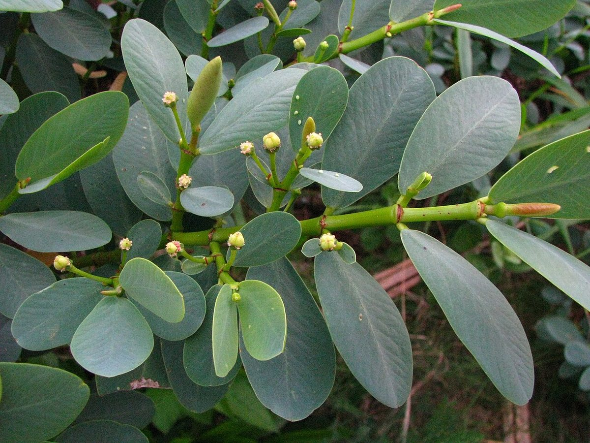
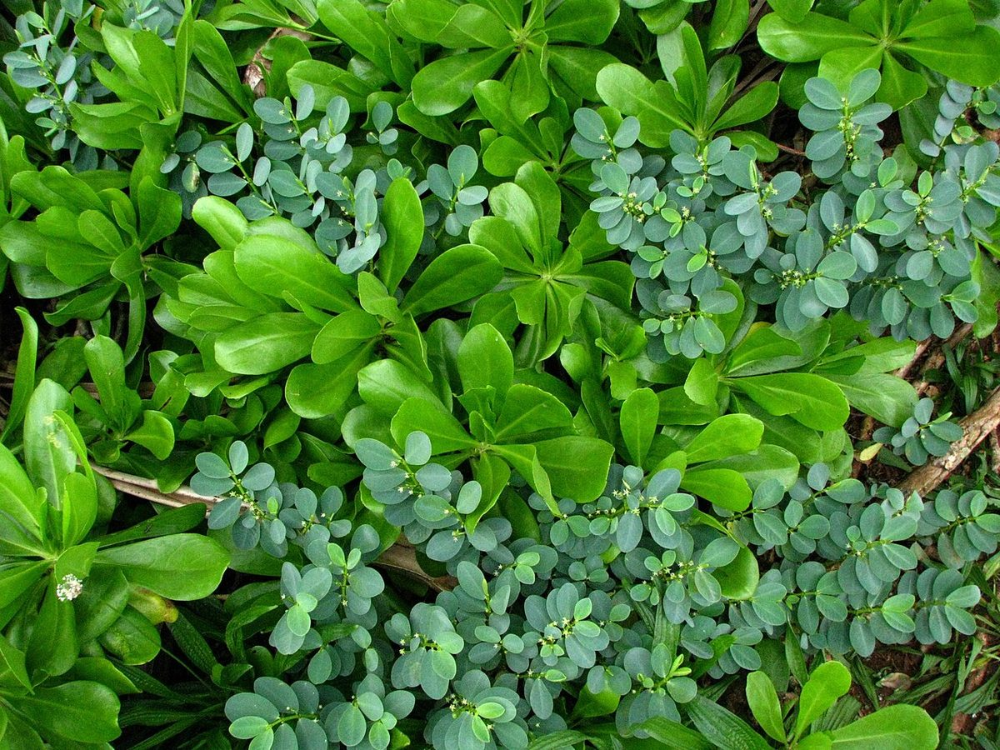

Chamaesyce celastroides var. stokesii
ʻakoko, ʻekoko, koko, kōkōmālei · Stokes's ʻakoko, coastal ʻakoko



Quick facts
| Family | Euphorbiaceae |
|---|---|
| Scientific name | Chamaesyce celastroides var. stokesii |
| Hawaiian name(s) | ʻakoko, ʻekoko, koko, kōkōmālei |
| English name(s) | Stokes's ʻakoko, coastal ʻakoko |
| Status | Endemic |
| Conservation | Not federally listed (as of 2026); IUCN not evaluated; ca. one thousand individuals estimated across its Kauaʻi–Niʻihau–Molokaʻi–Kahoʻolawe range and declining. State-managed populations at Kīlauea Point NWR are the most accessible. |
| Coastal zones | Sea cliff Beach strand |
| Occurrence | A Kauaʻi–Niʻihau–Molokaʻi–Kahoʻolawe coastal endemic and one of the most reliably-photographed native coastal ʻakoko in the field: the Kīlauea Point National Wildlife Refuge population on windswept north-shore basalt is the best-documented Kauaʻi stand. On the unpopulated coast of the guide's scope it occurs on windswept cliffs and ledges above the ocean along the Nā Pali coast and around exposed headlands; not on the beaches themselves. Companion to *Chamaesyce degeneri* (this guide, COMMON tier) — the two Kauaʻi coastal ʻakoko occupy overlapping but distinct microhabitats. |
How to identify
- Growth form
- Low glabrous shrub of windswept cliff-tops and ledges, spreading to loosely mounded, typically 20–60 cm tall; woody at the base with many pale-grey stems radiating outward.
- Size
- Individual plants 20–60 cm tall; a mature clump 1 m across.
- Leaves
- Small, broadly obovate to spatulate, thick and glabrous, 5–15 mm long, in opposite pairs on the slender stems (Euphorbiaceae Chamaesyce pattern). Blade texture leathery-succulent, adapted to salt spray and wind desiccation. Blue-green to green.
- Flowers
- Cyathia (the *Chamaesyce* / *Euphorbia* pseudo-flower): tiny, cup-like structures with reduced male and female flowers packed inside, borne singly in leaf axils. Not showy — a hand lens reveals the structure but the plant reads as flowerless.
- Fruit / seed
- Small 3-lobed capsule, ~2 mm, splitting explosively at maturity to disperse seeds; bright pinkish to red fruits en masse can be surprisingly noticeable at close range.
- Bark / stem
- Pale grey, smooth, becoming slightly furrowed on older basal stems; wood white and low-density.
- Where it sits on the coast
- Windswept sea cliffs and cliff-top ledges immediately above the ocean; also on stabilized dune-adjacent basalt. Salt spray and wind are the microhabitat signature.
Clinchers (features that lock the ID)
- Low glabrous mounding shrub on windswept sea-cliff basalt — the habitat is the primary clue.
- Small opposite (paired-at-a-node) obovate glabrous leaves, thick and salt-adapted.
- Cyathia in leaf axils rather than showy flowers — the Euphorbiaceae subgenus *Chamaesyce* signature.
- Kauaʻi–Niʻihau range on the coast — off-island coastal ʻakoko will be a different variety or species.
Look-alikes
- Chamaesyce degeneri (in this guide, COMMON tier) — *C. degeneri* is prostrate (mat-forming, hugging the ground) rather than mounded upright; leaves are typically even smaller and the plant sits on flat coastal pans and dune surfaces rather than on cliff ledges above the sea.
- Chamaesyce celastroides other varieties (e.g., var. kaenana on Oʻahu, var. lorifolia on Maui-Nui) — Distinguishing the *C. celastroides* varieties is a specialist task requiring leaf-shape measurements and geography. On Kauaʻi coastal cliffs, var. *stokesii* is the default identification.
- Portulaca species — Portulaca leaves are alternate (single at a node) and distinctly fleshy-cylindrical; flowers are showy pink to yellow. Chamaesyce leaves are opposite and paired, and it appears essentially flowerless without a hand lens.
Ecology
Salt-tolerant coastal cliff shrub; part of the pre-contact Kauaʻi coastal-cliff flora. Persists best on state and federal refuge lands (Kīlauea Point NWR) and on the least accessible Nā Pali cliff ledges — the same microhabitat refuge that protects *Schiedea apokremnos* (this guide). Threatened primarily by feral goats grazing accessible ledges, invasive plants displacing seedlings, and gall-inducing insects (a psyllid injury has been documented on Kauaʻi individuals). [1], [2], [3], [53], [54]
Cultural significance
ʻAkoko species were used historically as sources of a milky latex; the group has cultural weight in Hawaiian botanical vocabulary (multiple Hawaiian names — ʻakoko, ʻekoko, koko, kōkōmālei — signal familiarity). Cultural documentation specific to var. *stokesii* is sparse; we note the group-level association honestly rather than inventing use claims for this variety.